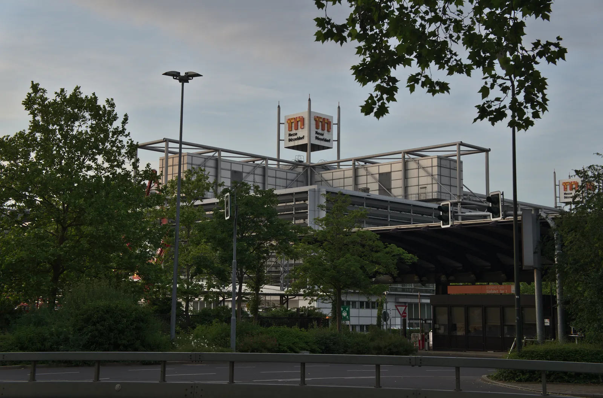
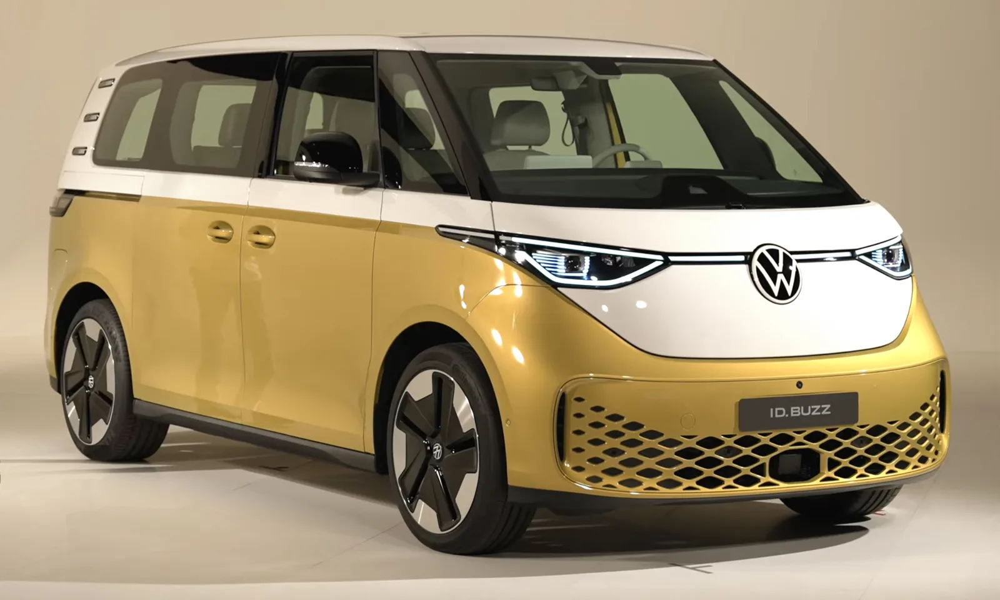
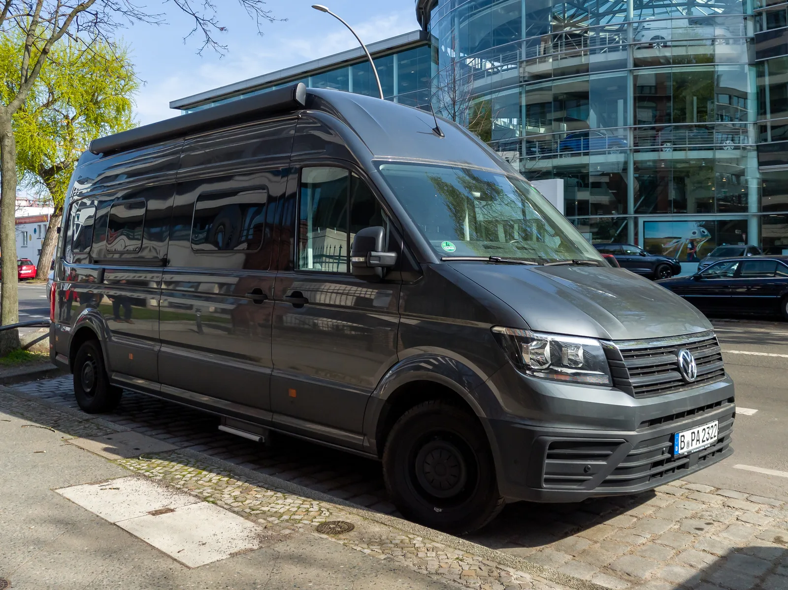

▲ 독일 뒤셀도르프 메세에서 열린 카라반살롱 2026 전시장 입구(자료사진)
독일 뒤셀도르프에서 열린 세계 최대 캠핑카·카라반 박람회 '카라반살롱 2026(CARAVAN SALON 2026)'이 지난 8월 28일부터 9월 6일까지 9일간의 일정을 마치고 막을 내렸다. 65회째를 맞은 올해 행사에는 41개국 834개사가 참가했고, 방문객은 25만9천 명을 넘어서며 역대급 규모를 다시 한번 증명했다. 오토트리뷴 원문 기사에서 확인 가능
세계 최대 규모, 숫자로 보는 카라반살롱 2026
카라반살롱은 1965년 시작된 세계에서 가장 크고 오래된 캠핑카·카라반 전문 박람회다. 뒤셀도르프 메세 전시장 전관을 사용해 열리며, 완성차 형태의 모터홈부터 견인식 카라반, 캠핑 액세서리, 차박 장비까지 이동형 여가 생활과 관련된 거의 모든 산업군이 한자리에 모인다. 주최 측에 따르면 올해는 41개국 834개 참가업체, 25만9천 명 이상의 방문객이 다녀갔으며, 이는 최근 몇 년 사이에서도 손꼽히는 성적이다.
| 구분 | 2026년 기록 |
|---|---|
| 개최 기간 | 2026년 8월 28일 ~ 9월 6일(9일간) |
| 참가국 | 41개국 |
| 참가업체 | 834개사 |
| 누적 방문객 | 25만9천 명 이상 |
| 회차 | 65회 |
| 차기 행사 | 2027년 8월 27일 ~ 9월 5일 |
규모만큼이나 눈에 띄는 건 참가사들의 '다음 수'였다. 올해 행사의 화두는 단연 전동화와 자급자족형 캠핑 시스템이었다.
올해 하이라이트, 참가사들이 꺼낸 신제품
독일 캠핑카 명가 데트레프스(Dethleffs)는 폭스바겐 크래프터 4×4 섀시를 기반으로 한 콘셉트 모터홈 'C.Core'를 공개해 큰 주목을 받았다. 새의 뼈 구조에서 착안한 다층 알루미늄 패널 '넥토(Necto)'로 차체를 만들고, 지붕에는 접이식 태양광 패널이 옆으로 펼쳐져 차양 역할까지 겸하는 '솔라 플라워' 시스템을 얹었다. 물 재순환 시스템과 무선 충전, 초단초점 프로젝터 등 자급자족형 생활 기술이 대거 적용됐다.
모듈형 캠핑카로 유명한 보이어(Beauer)는 'X6' 모델을 통해 버튼 하나로 1분 안에 약 20㎡ 크기의 생활공간으로 확장되는 슬라이드아웃 구조를 선보였고, 베스트팔리아(Westfalia)는 3단 구조의 실내 공간에 루프탑 테라스까지 갖춘 '콜럼버스 라이너(Columbus Liner)'를 공개했다. 좁은 차체 안에서 최대한의 공간 효율을 뽑아내려는 경쟁이 치열했던 셈이다.
가장 큰 이슈, 폭스바겐의 '첫 순수 전기 캠퍼밴'
행사 최대 화제는 폭스바겐이 공개한 ID. 캘리포니아 크루즈(ID. California Cruise)였다. ID. 버즈(ID. Buzz) 플랫폼을 기반으로 한 이 모델은 폭스바겐이 60년 넘게 이어온 '캘리포니아' 캠퍼밴 라인업 최초의 순수 전기 모델로, 2인이 누울 수 있는 2.03m 길이의 침대와 V2L(Vehicle-to-Load) 기능을 갖췄다. 독일 기준 가격은 약 6만800유로(한화 약 9,500만 원 안팎)부터 시작하며, 첫 인도는 2027년 초로 예정돼 있다.

▲ ID. 캘리포니아 크루즈의 기반이 되는 폭스바겐 ID. 버즈(자료사진)
ID. 캘리포니아 크루즈는 폭스바겐이 2028년까지 확장할 계획인 전기 캠퍼밴 패밀리의 시작점으로, 이번 행사를 기점으로 다른 제조사들의 전동화 경쟁에도 불이 붙었다는 평가가 나온다. 데트레프스, 보이어 등 다수의 참가사들이 400km 이상 주행거리를 갖춘 전기 캠퍼밴·모터홈 콘셉트를 함께 선보이며 V2L 기능과 독립형 태양광 에너지 시스템을 공통적으로 강조했다.
유럽 캠핑 시장은 왜 이렇게 뜨거운가
유럽에서 캠핑카·카라반 시장은 팬데믹 기간 급성장한 뒤에도 꾸준히 규모를 유지하고 있는 몇 안 되는 자동차 관련 산업군이다. 독일, 프랑스, 이탈리아 등 주요국을 중심으로 개인 소유형 모터홈과 렌털 캠핑카 수요가 동시에 늘고 있으며, 전통적인 견인식 카라반보다 실내가 넓고 운전이 편한 일체형 모터홈, 그리고 평소에는 승합차처럼 타고 다니다 주말에 캠핑카로 전환하는 '캠퍼밴' 형태의 인기가 특히 높다.

▲ 폭스바겐 캘리포니아 캠퍼밴 계열 모델(자료사진). 신형 ID. 캘리포니아 크루즈는 이 라인업의 순수 전기 버전이다
이런 흐름 속에서 카라반살롱은 신차 공개 무대이자 시장의 방향을 가늠하는 척도 역할을 해왔다. 올해 행사에서 전동화 콘셉트가 대거 등장한 것은, 단순한 볼거리를 넘어 완성차·캠핑카 업계가 실제로 전기 캠퍼밴을 양산 라인업에 편입시키기 시작했다는 신호로 해석된다.
한국 차박 시장과 비교하면
국내에서도 이른바 '차박' 열풍과 함께 캠핑카·캠퍼밴 시장이 빠르게 성장해왔다. 다만 유럽과 비교하면 차이가 뚜렷하다. 유럽은 카라반살롱 같은 대형 박람회를 중심으로 완성차 업체가 직접 순정 캠퍼밴을 양산·판매하는 구조가 자리 잡은 반면, 국내는 아직 스타리아, 카니발, 혹은 승합차를 개조 업체가 후개조하는 방식이 주류다. 전기차 기반 캠퍼밴 역시 국내에서는 아이오닉 5, EV9 등을 개인이나 소규모 업체가 개조하는 수준에 머물러 있어, 완성차 브랜드가 직접 '순정 전기 캠퍼밴'을 내놓은 폭스바겐의 사례와는 시장 성숙도에서 격차가 있다.

▲ 국내에서도 후개조 방식의 전기 기반 캠퍼밴이 늘고 있지만, 완성차 브랜드가 직접 순정 전기 캠퍼밴을 양산하는 유럽과는 아직 격차가 있다(자료사진)
다만 국내 캠핑 인구와 차박 수요가 꾸준히 늘고 있는 만큼, 카라반살롱에서 검증된 전기 캠퍼밴 트렌드가 국내 완성차·개조 업계에도 영향을 줄 가능성은 충분하다. 다음 카라반살롱은 2027년 8월 27일부터 9월 5일까지 같은 장소에서 열릴 예정이며, 폭스바겐을 비롯한 참가사들이 전동화 캠핑카 경쟁에서 어떤 다음 수를 꺼낼지 주목된다.